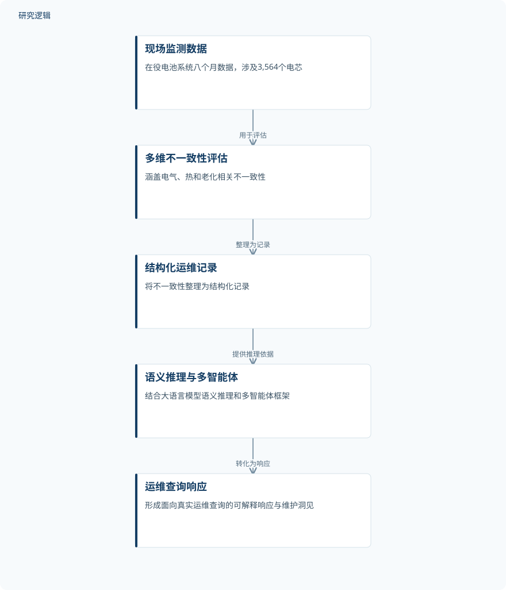

摘要解读
面向可解释电池系统维护的多智能体人工智能框架
A multi-agent AI framework for explainable battery system maintenance
解读更新 2026-10-18 08:38 · 依据公开摘要整理，未核验全文细节
电池储能系统的运维如何从电芯异常信号走向可解释、可执行的维护决策？这项研究提出一套多智能体 AI 框架，尝试把日常监测数据中的不一致性转化为面向运维问题的指导，并报告了现场数据应用结果。
文章目录
从电芯不一致性到运维行动
电池储能系统（BESSs）对电力系统稳定性日益重要，但摘要指出，其运维仍以被动响应和依赖专家诊断为主。电芯层面的不一致性可能预示退化与安全风险；难点在于，如何把这些定量信号转化为规模化、可解释的实际行动。
研究聚焦的正是这一衔接问题：让常规监测数据不止用于发现异常，还能形成面向运维决策的指导。摘要将其称为“不一致性驱动”的大型 BESS 运维范式。
量化评估与语义推理相衔接
框架将多维不一致性评估与基于大语言模型的语义推理结合，意在连接定量诊断与实际维护决策。摘要提到，电气、热和老化相关的不一致性先被整理为结构化运维记录，再经多智能体框架转化为维护洞见。
验证所用数据来自一套正在运行的电池系统，覆盖八个月现场数据、共 3,564 个电芯。摘要没有进一步说明各处理环节的具体算法、智能体分工或运维查询的构成，因此不宜据此补写实现细节。
依据摘要整理的研究过程示意


仅概括摘要明确陈述的数据、分析衔接与应用环节，不表达未报告的实验配置或结果；此图为摘要示意，并非论文原图。
下载 SVG图示关系说明
实线表示相邻阶段的信息流，虚线表示跨阶段联系或反馈。
现场监测数据 → 多维不一致性评估：用于评估；多维不一致性评估 → 结构化运维记录：整理为记录；结构化运维记录 → 语义推理与多智能体：提供推理依据；语义推理与多智能体 → 运维查询响应：转化为响应
现场数据上的运维问答与效率表现
摘要报告，该方法能够针对真实运维查询给出准确且可解释的响应，并将响应时间和运维成本相较传统专家驱动做法降低了 80% 以上。这是摘要陈述的总体比较结果；摘要未提供指标定义、计算方式或分项结果，因而不应将其外推为所有场景下的固定收益。
作者据此提出，这一框架为电池储能系统智能运维提供了可扩展路径，并指出其可能关联系统可靠性、安全性及储能的经济性整合。这些是摘要所述的应用意义，不等同于已逐项验证上述长期效果。
摘要尚未展开的验证边界
摘要给出了单套在役电池系统、八个月数据和 3,564 个电芯的信息，但无法据此判断系统的具体类型、数据采集与筛选方式，也无法判断不同电芯或异常事件如何分布。摘要同样未说明是否有其他系统或场景参与验证。
虽然报告了与传统专家驱动实践的效率比较，摘要没有交代比较对象、基线流程、样本范围及统计方法，也未说明“准确”和“可解释”的评价标准。因此，现有摘要信息不足以判断效果在不同运维任务中的稳定性或可迁移范围；未报告这些细节不代表论文全文没有相关内容。
阅读启发：追问决策链条如何被核验
阅读启发：进一步阅读时，可关注多维不一致性如何被定义并整理成结构化记录，以及多智能体如何把记录用于回答运维查询。这些环节决定了定量诊断与自然语言建议之间的衔接是否清晰可追溯。
也值得核对论文对准确性、可解释性和效率比较的具体定义与验证范围，并留意建议如何对应可靠性与安全风险。以上是基于摘要提出的阅读问题，不代表摘要已给出这些问题的答案。
以上为本站阅读启发与建议，不是论文已验证的结论。